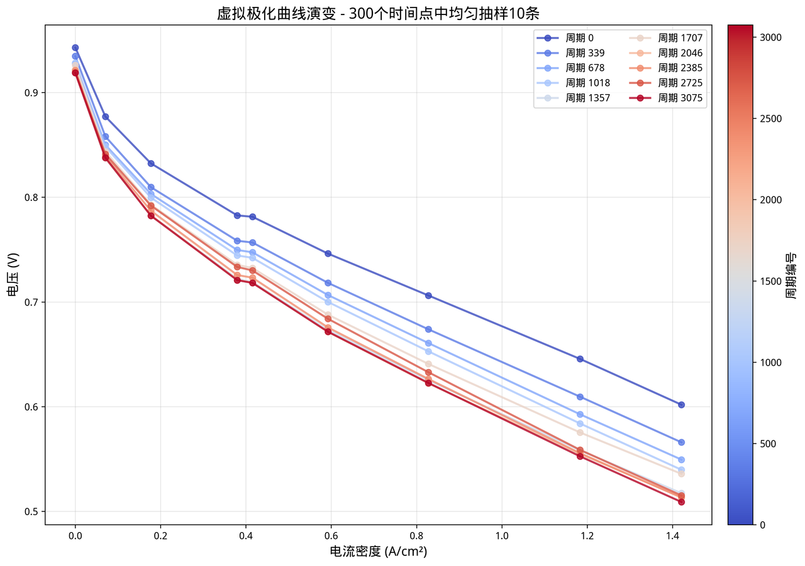

阶段一 · 数据基础
数据预处理与虚拟极化曲线构建
- 通过完整性检查、多段文件合并与时间轴对齐、降采样清洗原始数据；从 9 个代表性电流条件（0.00–35.53 A）提取循环级电压退化趋势，经防脉冲干扰平均滤波获得稳定序列；
- 在 300 个关键循环点整合各电流平滑电压，重构虚拟极化曲线数据集，无需停机极化测试即可近实时刻画电池外特性；
- 退化规律：低电流密度区电压退化率约 2.56%、高电流密度区高达 15.44%，最大输出功率由 21.38 W 降至 18.08 W；95% 以上曲线满足物理单调约束，且高电流密度区保留了更明显的不可逆衰减。
